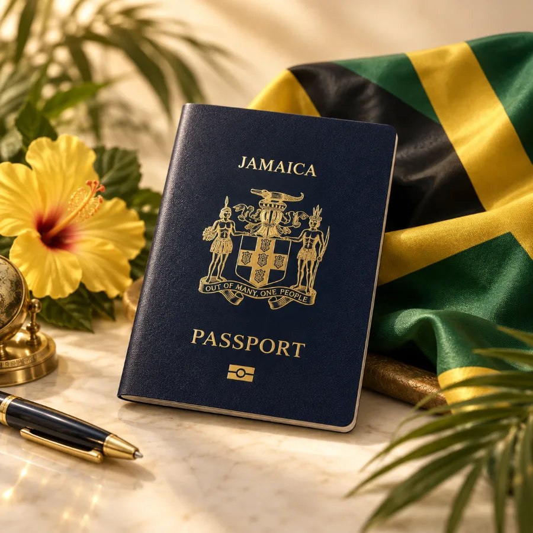
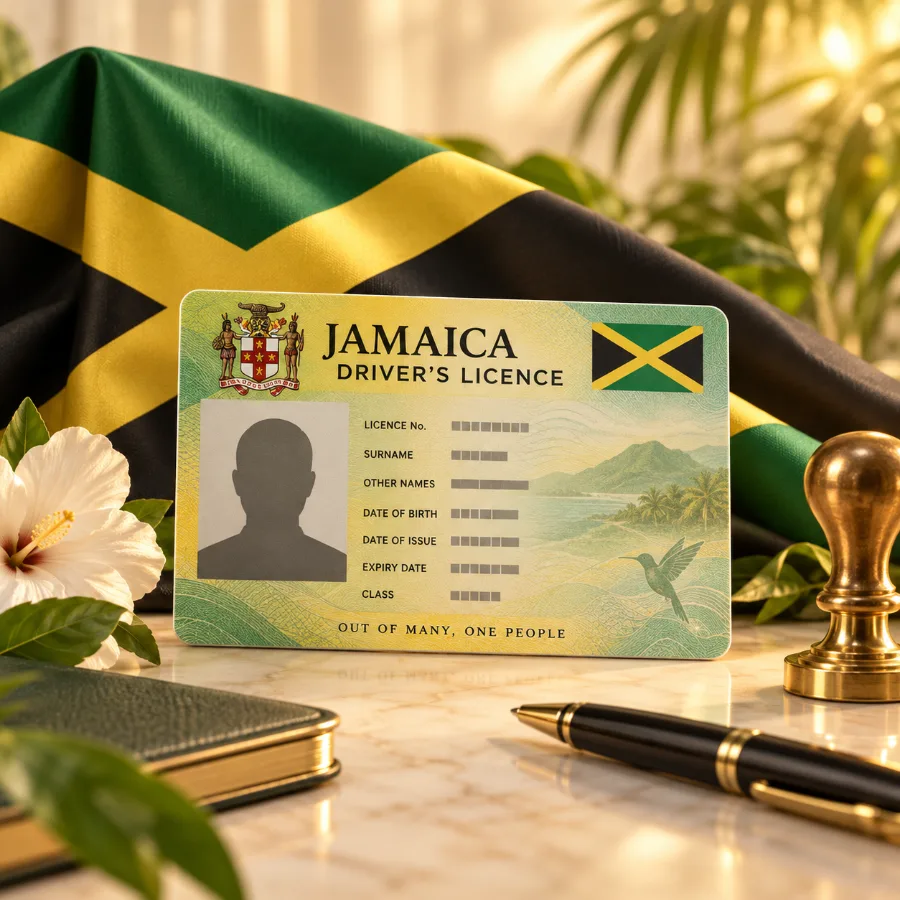

Florida Notary Services
Professional notarization for personal and business documents.
Professional. Reliable. Convenient.
Professional, Reliable, Convenient Service
PERSONAL, PROFESSIONAL SUPPORT
Au-Some Notarific Services LLC provides friendly, dependable assistance for clients in Bay County and surrounding areas, connecting the needs of Florida and Jamaican communities.
Professional notarization for personal and business documents.
Practical assistance preparing renewal paperwork and organizing documents for submission to the appropriate Jamaican authority.
Document support to help organize Jamaican driver’s license renewal requirements for the applicable issuing authority.
WHY CHOOSE AU-SOME?
Work directly with Melicia. Every request is handled with care, discretion and attention to detail.
Professional & Confidential
Your documents and personal information are handled respectfully.
By Appointment
Serving Bay County and surrounding areas with convenient, scheduled appointments.
Jamaica • Florida • and Beyond
Support for clients managing important documents across communities.
HELPFUL RESOURCES
A little preparation can make your appointment smoother and help avoid unnecessary delays.
Read more →
Planning ahead gives you time to handle requirements before an urgent deadline.
Read more →
Checking renewal requirements early can make maintaining your Jamaican license less stressful.
Read more →